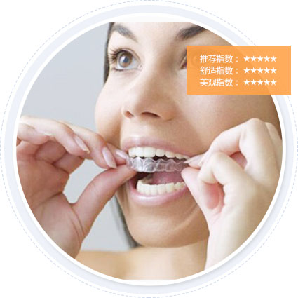

WHAT IS ORTHODONTICS?
什么是牙齿矫正？
牙齿正畸在牙科领域中，已经有着较长的历史了，一直以来在青少年群体中较为常见，因为孩童时期是矫正的黄金年龄。但随着牙科技术的发展，成人正畸也成为了一项主流的美齿技术。
从概念上来看，牙齿正畸是通过给患者戴矫正器并施加外力使牙齿移位，达到重新排列的目的。正畸对牙体无损伤，不会对牙齿神经造成损伤，更不会使牙齿变松，易脱落。所以说，正畸是一种安全而有效的治疗方法，患者 一般可以达到其理想的效果。想要美齿，永远不会太迟！
WHY IS ORTHODONTICS IS NECESSARY?
为什么必须要进行牙齿矫正？
SEE THE WORLD THROUGH ORTHODONTICS
透过牙齿正畸看世界
33%
最恨赞美文静，因为永远笑不露齿。
22%
一口龅牙如何让我工作顺利，说话全是标点符号，升职谈何容易！
20%
这样怎么能谈恋爱，
接吻都不唯美。
25%
别人凭什么愿意和我玩，张嘴影响心情。
牙齿正畸在牙科领域中，已经有着较长的历史了，一直以来在青少年群体中较为常见，因为孩童时期是矫正的黄金年龄。但随着牙科技术的发展，成人正畸也成为了一项主流的美齿技术。从概念上来看 ，牙齿正畸是通过给患者戴矫正器并施加外力使牙齿移位，达到重新排列的目的。正畸对牙体无损伤，不会对牙齿神经造成损伤，更不会使牙齿变松，易脱落。所以说，正畸是一种安全而有效的治疗方 法，患者一般可以达到其理想的效果。想要美齿，永远不会太迟！
通过对他们的采访，我们了解到很多明星都接受过牙齿矫正，例如我们熟知的汤姆克鲁斯、贾斯汀等。在欧美国家，每个人都会把牙齿当作自己的名片，在他们看来与人交往时，如果没有一口好牙，会 显得不尊重别人。而现在牙齿矫正的热潮，已经开始席卷全球。
SNAGGLETOOTHED FOUR HAZARDS
牙齿不齐四大危害
01
影响口腔的健康
牙列拥挤不齐使牙齿不能自洁，菌斑结石堆积，引起龋病及牙龈牙周的炎症;同时牙齿的错位、咬合异常也可造成牙周损害;牙列稀疏则容易发生食物嵌塞而伤害牙龈牙周的健康。
02
影响容貌外观
各类错颌畸形，都不同程度地影响容貌外观，这也是很多患者要求矫治的直接原因。如开唇露齿、双颌前突、长面或短面畸形等。
03
影响颌面发育
在儿童的生长发育过程中，许多不良习惯所致的牙颌畸形将影响牙颌面软硬组织的正常发育。如前牙反颌，俗称“地包天”，就是指下前牙位于上前牙唇侧的畸形，从而形成面中部凹陷和下颌骨过度前突畸形。
04
影响口腔功能
严重的错颌畸形可影响口腔的正常功能，如前牙开颌(即上下前牙无法咬合)造成发音异常，后牙锁颌影响咀嚼功能，严重的下颌前突造成吞咽异常，下颌严重后缩则影响呼吸功能。
WHO NEEDS ORTHODONTICS?
哪些人需要做牙齿矫正？
HoOW TO CHOOSE THE METHODS ORTHODONTICS?
如何选择牙齿矫正的方法？
美颜正畸
MEI YAN ZHENG DURING ORTHODONTIC
矫正周期
CORRECTION CYCLE
9个月，在矫正1-2个月后有明显的牙齿结构改善。
技术优势
TECHNICAL ADVANTAGES
在不磨牙，不戴冠的情况下，采用内窥镜，与数控隐形矫正技术（牙齿矫正）相结合，在实现健康矫正的同时，利用矫正牙齿过程中的骨移动原理，重新改造面部形态的骨骼群，最终实现面部美颜正畸。

3D隐形矫正
3D STEALTH CORRECTION
矫正周期
CORRECTION CYCLE
1-1.5年，在矫正3-6个月后有明显的牙齿结构改善，在矫正1-2个月后有明显的牙齿结构改善，将视牙齿的畸变情况。
技术优势
TECHNICAL ADVANTAGES
矫治器厚度不到1mm，透明、光滑、舒适，无异物感和粘膜刺激，矫正时间比传统正畸缩短近三分之一。
3M托槽
3 M BRACES
矫正周期
CORRECTION CYCLE
1-2年，在矫正3-6个月后有明显的牙齿结构改善，在矫正1-2个月后有明显的牙齿结构改善，将视牙齿的畸变情况。
技术优势
TECHNICAL ADVANTAGES
技术优势：采用"锁扣"技术，6步即轻松完成，记忆功能的弹性弓丝，大大提高了畸牙移动的有效性，有些疗程可缩短6个月以上。
陶瓷托槽矫正
CERAMIC BRACES CORRECTION
矫正周期
CORRECTION CYCLE
1-2年，在矫正3-6个月后有明显的牙齿结构改善，在矫正1-2个月后有明显的牙齿结构改善，将视牙齿的畸变情况。
技术优势
TECHNICAL ADVANTAGES
技术优势：全陶瓷托槽与牙齿贴合紧密，生物相容性优良，美观舒适，比传统托槽更加美观，配带舒适，利于清洁。
个性化托槽矫正
PERSONALIZED ORTHODONTIC CORRECTION
矫正周期
CORRECTION CYCLE
1-2年，在矫正3-6个月后有明显的牙齿结构改善，在矫正1-2个月后有明显的牙齿结构改善，将视牙齿的畸变情况。
技术优势
TECHNICAL ADVANTAGES
根据您的个人喜好，满足您的个性化需求，您甚至能够亲身参与设计，实现您的靓牙美齿。
自锁托槽矫正
A CORRECTION SELF-LOCKING BRACES
矫正周期
CORRECTION CYCLE
1-2年，在矫正3-6个月后有明显的牙齿结构改善，在矫正1-2个月后有明显的牙齿结构改善，将视牙齿的畸变情况。
技术优势
TECHNICAL ADVANTAGES
有效地减小了托槽与弓丝之间的摩擦阻力，更容易排挤牙齿和关闭拔牙间隙。舒适无痛，弓丝力量柔和，即使排挤阶段也无任何不适感。
ORTHODONTIA FAQS
牙齿矫正常见问题
一般孩子在矫正牙齿时，最佳年龄是在12岁左右的，这时一般孩子已经换完牙齿了，这时在矫正就没有问题了。
开始矫正前两三天进食软食，就是稀饭、面条之类的。根据自己的适应情况决定什么时候可以恢复吃米饭，避免吃过硬的食物。
注意口腔卫生，一天要刷三次牙，严格意义来说每次吃完东西都要刷牙，因为不刷牙的话，容易导致牙龈炎，严重的话，会加重牙齿的松动度，不利于牙齿的健康
牙齿矫正一定要选择专业权威的医院，因为领先的设备和经验丰富的专家才能保证矫正效果。
想了解更多关于矫正的信息 可点击直接咨询在线医生